Numero Cinque des Innamorati
RobeMâle · Seal point
StatutAdopté
Album16 photos, de juillet 2017 à novembre 2018


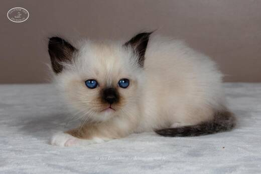

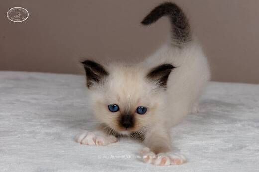

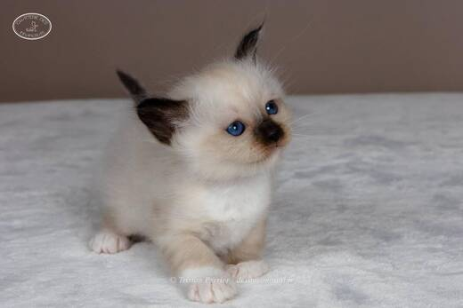

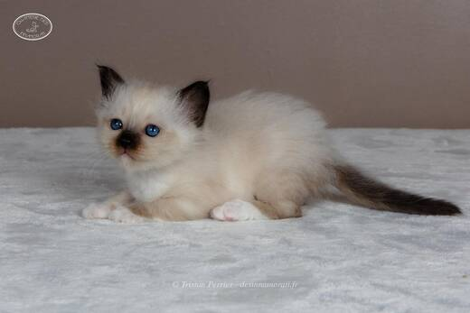

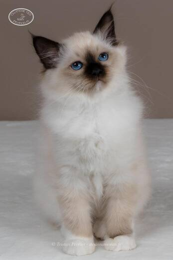

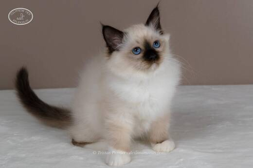

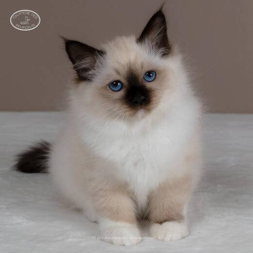

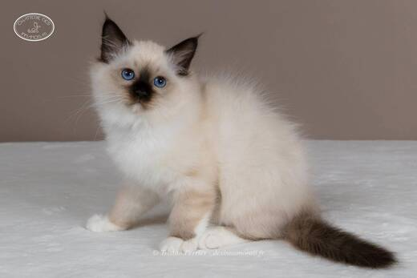

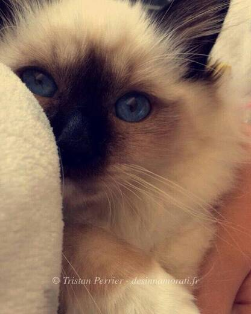

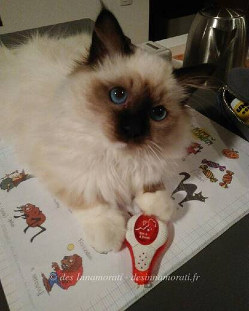

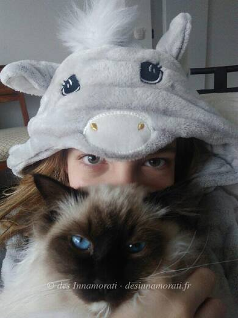

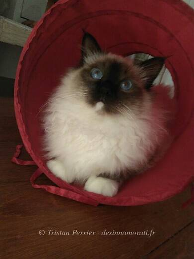

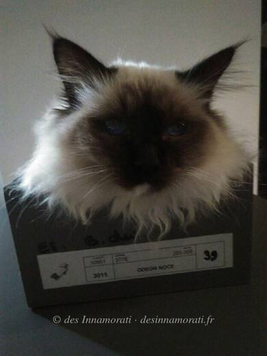

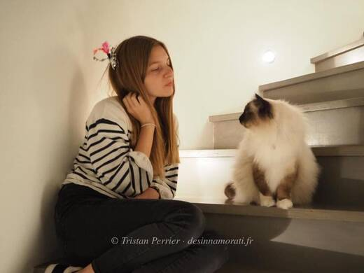

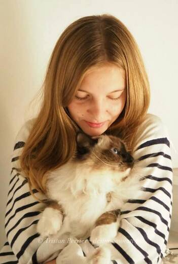
Photos réduites et marquées. Elles appartiennent à la Chatterie des Innamorati et ne peuvent pas être reprises dans une annonce.